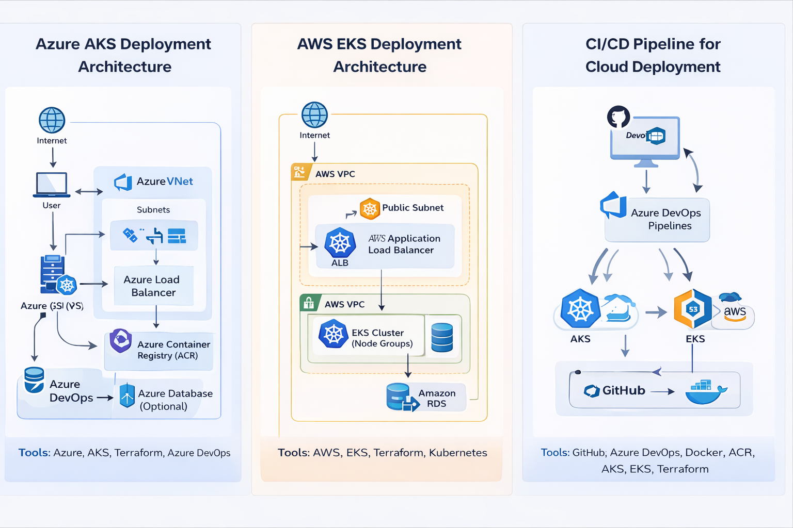

Azure AKS Deployment
Built and configured an AKS environment using Terraform, integrating networking, access control and deployment workflows.
Tools: Azure, AKS, Terraform, Azure DevOps

Architecture diagrams for my Azure AKS, AWS EKS and CI/CD pipeline projects.